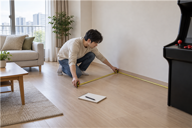
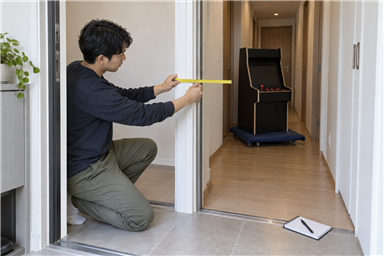

가정용 오락기의 설치 공간은 본체를 둘 자리만 재면 충분하지 않습니다. 자리의 폭·깊이·높이, 현관과 복도의 가장 좁은 구간, 전원과 화면 연결에 필요한 여유를 같은 순서로 확인하세요. 측정값을 메모해 두면 제품 형태와 반입 가능 여부를 문의하기 쉬워집니다.

본체를 둘 자리는 폭·깊이·높이를 함께 재세요
설치하려는 바닥의 폭과 깊이를 재고, 선반이나 조명처럼 위쪽에 닿을 수 있는 물건이 있다면 높이도 확인하세요. 문을 열거나 사람이 조작할 때 필요한 앞뒤 공간도 본체 자리와 나누어 적어 두는 것이 좋습니다.
설치할 자리는 본체 크기와 조작할 사람의 움직임까지 포함해 재야 합니다.
- 바닥에서 사용할 수 있는 폭과 깊이
- 바닥부터 선반·조명까지의 높이
- 조작할 사람이 서거나 앉을 앞쪽 공간
- 전원선과 화면 연결선을 둘 뒤쪽 공간
오락기를 처음 설치할 때 확인할 항목도 함께 살펴보세요.

문과 복도는 가장 좁은 구간을 확인하세요
현관문과 방문은 문짝이 열린 상태에서 문틀 안쪽 폭을 재세요. 복도 모서리, 엘리베이터 문, 계단처럼 방향을 바꿔야 하는 곳도 따로 측정하고 사진과 함께 메모하면 반입 경로를 설명하기 쉽습니다.
반입 경로는 평균 폭이 아니라 문틀과 모서리를 포함한 가장 좁은 구간이 기준입니다.
스탠드형 오락기를 옮길 때 확인할 점에서 이동 전 준비 항목을 볼 수 있습니다.
전원과 화면 연결 여유를 남겨 두세요
콘센트 위치와 케이블이 지나갈 방향을 확인하고, 문이나 통로를 선이 가로지르지 않는지 살펴보세요. TV 연결형을 생각한다면 화면과 조작부를 둘 위치를 각각 재고 두 위치 사이의 연결 경로도 확인해야 합니다.
전원선과 화면 연결 공간을 남겨야 설치 뒤 선이 꺾이거나 통로를 가로막지 않습니다.
측정값과 사용 환경을 함께 문의하세요
노리박스 제품 페이지는 스탠드형, TV 연결형, 게임팩과 액세서리를 한곳에서 안내하고 있습니다. 설치 공간과 함께 즐길 사람을 알려주면 알맞은 제품을 안내한다는 상담 문구도 확인할 수 있으므로, 숫자만 보내지 말고 사용할 사람과 화면 연결 방식도 함께 정리하세요.
측정값과 함께 사용할 사람과 화면 연결 방식을 알려주면 제품 형태를 비교하기 쉽습니다.